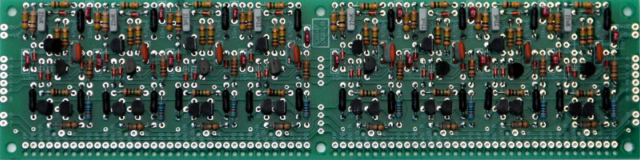
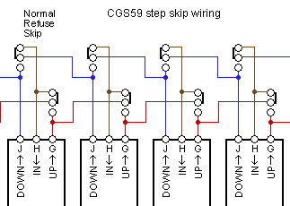

|
Programmer/Sequencer for music synthesizers.

Experienced builders only!This is a redesigned circuit board for the CGS59 Programmer/Sequencer. Unlike that version, this one has no panel-format specific PCBs. The master PCB still exists, though is somewhat different in structure. The output amplifiers have also been made using TL074 instead of TL072 chips. The column boards have been replaced with boards that contain 8 stages. Pots and their mix resistors can be mounted on something like the CGS94 pot carrier if you want 1" horzontal spacing, or simply panel mounted and hand wired as was traditionally done. The Programmer/Sequencer is a Serge inpired multi-stage sequencer. Unlike most sequencers, this one makes no use of binary counters. Rather, it uses a set of individual stages, each one directly accessible. As such it could be considered to allow "random access". The first sequencer produced by Serge was a 4017 based counter that put out gate pulses. In order to get a control voltage sequencer, the gate outputs were fed to the input stages of a multi-state programmer. Usually built in groups of four, but sometimes coupled through a switch, these programmers would only allow a single stage to be active at any time, outputting the corresponding control voltages to their bussed output jacks. The stages could be selected either via a gate/trigger input or a panel mounted push button. This module replicates the programmer, but with one major exception - up and down inputs allow it to be sequenced without connection to an external gate source. Any stage can be activated at any time by a direct pulse or button press. Up or down pulses will then step it from that stage. To limit the number of steps in the sequence, the pulse (gate) output of a stage is simply routed to the external pulse input for the first stage of the sequence. Note that the first stage used in a sequence need not be the first stage on the panel. For example it would be possible to have the first few stages used as an "introduction", with the sequence automatically looping to a stage in the middle of the panel once the sequence's first run was completed. There is also no theoretical limit to the number of stages that can be used, and I do know of sequencers that have been built with 16 stages. The maximum number of stages is of course chosen prior to building. The astute will recognise the circuits as having grown from that published in the Synapse article. Make no mistake - it wasn't simply copied. Hundreds of hours of R&D and numerous prototypes were needed to get it right, as the circuit has been taken far beyond its original intentions. A little on how it works:
When looking at the PCB with the pads facing down, as per the photos and diagrams here, the LEFT end of the PCB is stage 1. This is fine if you work on the rear of your panels with the panel flipped top to bottom. If you wish to reverse the sequence order, simply use all UP connections as down, and all DOWN connections as up. Bus"C" is the output of a current source. This source is capable of holding only one stage on at a time. When a second stage is triggered, it deprives the currently latched stage of current, causing it to reset. In doing so, it removes its load from the current source, allowing the recently triggered stage to remain on. The up-down function is provided by a dedicated pulse generator in each stage. Only when that stage is active are the pulse generators enabled. Upon receiving an up or down pulse from the corresponding bus, either the next or previous stage will be sent a trigger pulse.
Construction
Before you start assembly, check the board for etching faults. Look for any shorts between tracks, or open circuits due to over etching. Take this opportunity to sand the edges of the board if needed, removing any splinters or rough edges. (With the boards supplied by me, the edges are already milled, and etching faults are very rare.) When you are happy with the printed circuit board, construction can proceed as normal, starting with the resistors first, followed by the IC socket if used, then moving onto the taller components. Take particular care with the orientation of the polarized components such as electrolytics, diodes, transistors and ICs. When inserting ICs into sockets, take care not to accidentally bend any of the pins under the chip. Also, make sure the notch on the chip is aligned with the notch marked on the PCB overlay. On the rear of the "S" board there are two pairs of small square pads under the TL074s. These pads are for 100n 1206 (or even 805) SMT/SMD capacitors (or 10n, or 47n - it isn't critical). Put a little solder on one pad. Move the capacitor into position, and re-heat the solder. The capacitor will now be held in place. Solder the opposite end, then go back and tidy up the first joint if needed. Use ceramic monoblock caps, NOT electro or tantalum.  It is possible to add skip/stop switches to each stage. What's more, it is possible to do it in such a way that behavior in each direction can be controlled independently. Instead of running wires between pads J, H and G as described above, switches can be wired in as shown in the diagram to the left. Using on-off-on switches will result in each stage having three possible behaviors: Normal, where the stage will activate in sequence; Refuse, where the stage refuses to activate, causing the sequence to stop at the stage before, where it will remain until either the sequence is reversed, or some other manual override forces the sequence away from that stage, and; Skip, where that stage behaves as if it is not there, the following enabled stage activating on the next clock pulse. Setting several steps in a row to Skip will result in all of those stages being skipped. If two single pole on-off-on switches are used per stage, each direction can be set independently. If one double pole switch is used per stage, only a single switch per stage is required, though functionality will be reduced. Note that the diagram assumes UP will advance the step to the RIGHT. It needs to be mirrored if it is to be used as a wiring diagram. The skip functionality was developed at the suggestion of and in conjunction with Ryk Thekreator.
Notes:
Parts list The parts list has been divided into two, one part per board type used. Only one "B" type board and its associated parts will be needed. A minimum of three type "A" boards and associated parts will be needed. This is a guide only. Parts needed will vary with individual constructor's needs. If anyone is interested in buying these boards, please check the PCBs for Sale page to see if I have any in stock.
Can't find the parts? See the parts FAQ to see if I've already answered the question. Also see the CGS Synth discussion group.
Article, art & design copyright 2004 by Ken Stone
| ||||||||||||||||||||||||||||||||||||||||||||||||||||||||||||||||||||||||||||||||||||||||||||||||||||||||||||||||||||||